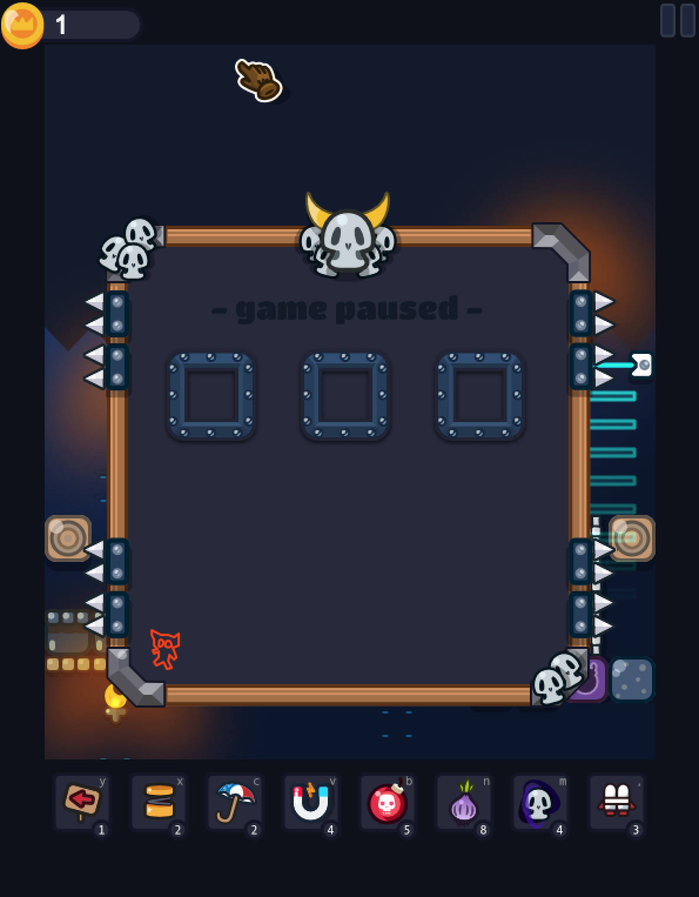
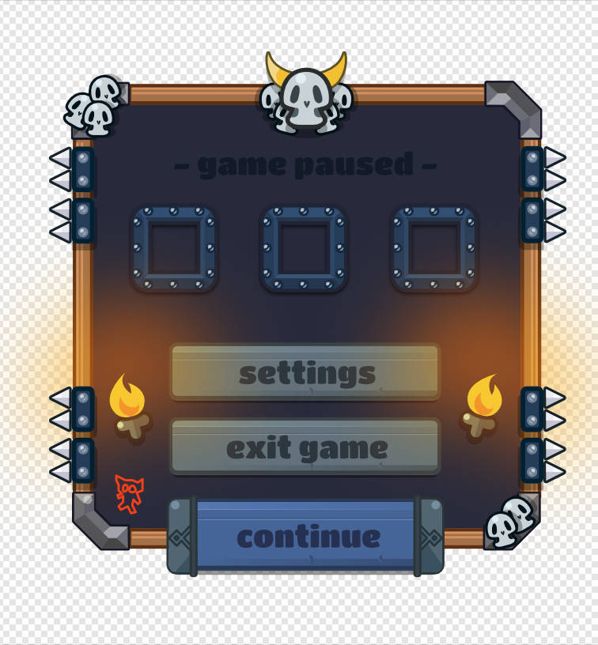
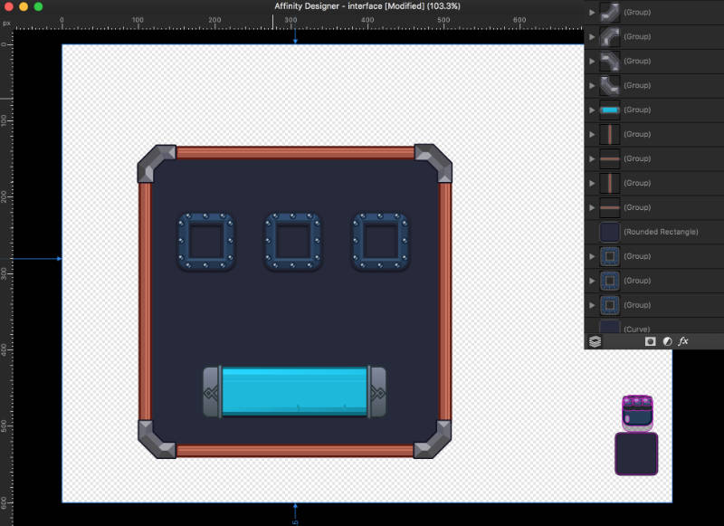
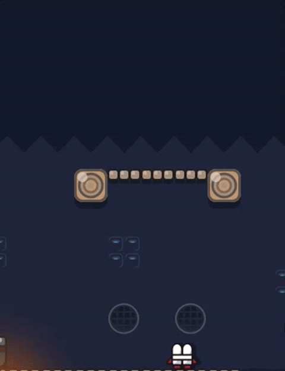

No updates: due to illness
It was supposed to be a big update, but since I am quite ill, I have to rest. I am sorry for that guyes, but dev will go one,
once I am up and running again. Just have to reboot for a few days.
Sam
It was supposed to be a big update, but since I am quite ill, I have to rest. I am sorry for that guyes, but dev will go one,
once I am up and running again. Just have to reboot for a few days.
Sam
There was not an update for a few days, since I am ill and have to take some time off.
But I got one sneak peak that doesn't made it into screenshot saturday due to the circumstances mentioned.
More on this next week, which you all a great sunday and stay healthy!
cheers
After some sleepless nights, there is finally some new gameplay! I made a youtube video, I hope you like it. And please, share you thoughts
about it! Wether as comments or contact me via twitter.
before christmas there will be a lot new things on Minions within a Dungeon!
There will be even more updates soon!
cheers
This one is stubborn the Overlord. The first hero to be introduced from "Minions within a Dungeon".
Let him be welcome with a deep bow, workshipping him for the evil kingdom!
There will be more updates soon!
cheers
As some of you already may have noticed; the site got a few updates. Share your opinion and what you like to see on the site, via twitter @sam_vieten.
The mobile versionwas updated just about know. there may be a few issues left, but I will fix them the next weeks.
cheers
After fixing hundreds of bugs (feels like), everything is running smooth and fine again. Had to stop and fix before I continued. But now the focus is back on the interface, which I am already implementing. Any thought on this?
This is the "backplate" and a few effect and buttons will shine above it. I also will need some nice animation for active and deactive state changes. I hope it will be done this week :) any feeback is appreaciated as always!
Ongoing to part 1, I am writing more about technically stuff: frameworks for gamedevelopment, js and tools. If you are in for gamedev: check it out! Read more
After all this time, the core mechanics are done. And the next focus goes to the UI. A first shot of what I am working on right now:
What tools are out there? Too many, you can't know every tool. I summarized the tools that worked best for me and tell you a bit why and what they can do. Read more
This sounds huge. But core mechanics are the basics; which everything else relies on. So: It's good but it's not like "almost done". Just to get the wind out of the sails - haha. The core mechanics are done means: physics, lighting / blending, physics related like: jumping, climbing, falling and main-abilities and all the base classes: enemies, minions, placeables, collectables, environments, effects and abilities etc. are done.
So, what else is on the list? First on: traps then enemy-types, UI and finally splashscreens and text-stuff. When all of this is done I will turn to leveldesign. Everything what I am about to do now relies on the core mechanics. So they had to be done first.
The game is already over one year in development. This includes setting gametype, mechanics, finding the right graphics style, doing the base animations and graphics, some sounds, development. Somewere around this summer I realized that the code base the game was build on had grown too unclean over the last past month. And I needed to refactore a way too much. So I decided to rewrite big parts of the game. This was faster then refactoring the old code; And with a higher level of knowledge, there were smarter ways to be gone.
In the end this resulted in a way better User Experience by playing the game. Everything feels and looks more smooth and the codebase is smaller and cleaner. This also makes maintaining and upgrading the game easier and faster. It had helped a lot. Since I am always concerned about giving the best possible experience, the more smooth feeling of the game really comforts me. The first user test will start by the end of this year, there will also be a report on this.
Something like early access on steam: That's what I would basically do. But the game isn't that easy to push into iterations. This relies on the architecture of gameplay. For a complete level I would need the whole base mechanics and much more. Everything is connected and without building it in from level 1, it would be very hard to create a User Experience that is worse it. (In this level)
So no iterative release like you know from early access games. That sounds terrible so I got thinking about this for a while and I came up with another idea for the release cycle. You know: getting your game out is always the hardest part. Once the base game is complete, it will be release to early access or something like that - I do not know yet. But it won't cover everything I would like to see ingame. Anyway the game itself will be complete, so the graphics are polished, sounds are there and everything the released levels need is delivered with the game.
Just for an example, I am thinking of different level settings to be released in iterations along with new "heroes" - there will be a post on additional content and heroes somewere around when time has come.
But what I like to say is: The "core" game will be released finished as early access and a whole more content will following depending on your feedback. I think early access / early birds is a great way to see what you, the community / gamers think about the game; What you expect and miss on it. And then: get the game more in the direction you want it to be. So this would be a base to build on. And I could design more game content based on your feedback which will be pushed into the game by iteration. Note that this isn't like expanding some items like in early access games; it's more like you want to see a specific environment-settings and a whole new chapter is made in this setting.
In the end it's kind of early access, but it is not early access through the gamedevelopment, it's contentwise. I hope you like that idea. Let me get your feedback on this via twitter: @sam_vieten.
There could also be something like a kickstarter and for every goal reached, there could be a content-update on the game. So it's community funded. But that's just a thought. We will see in 2017, how it turns out to be. I hope you enjoyed this like excurse into the release-plan. Any feedback is appreciated - as always.
cheers,
sam
A few of you were wondering why I only keep a personal devblog via twitter and do not do a company page which all that updates.
This question is fairly simple and I think you wil agree: The reason is that I like to get as close to the gamers as I could. A game lives from the feedback the players give and from a comunity that is involved into the development of a game.
There is no company behind, I am a one-man developer, designer and componist on gamedev and like to keep things simple and clear. So do not hesistate to contact me via mail or twitter. You can leave feedback, ideas, wishes, expectations - whatever you want. Just send me a message or post public to me via twitter: @sam_vieten
Any kind of a lifesign from you is highly appreciated. Cheers.
- Sam
Ladders are done, just need to work out the last animation! - #MwaDungeon#gamedev #indiegame #phaserJS #indiegamedev #js #dev #game #indie pic.twitter.com/FnStMlRSJu
— ✪ Sam ✪ (@sam_vieten) 3. Oktober 2016
After being some days on vacaition I went back to gamedev. Minions can now climb ladders. That sounds easy but by consodering every single item that affects movement, gravity and physics it was kind of hard to "simply" make it happen. But there we go, it's done.
The ladder climbing took one new animation and consideration in the general physics. In addition it took several adjustments to the core game mechanics. For example if you jump or rocket-fly via a jumper or jetpack, the minion has to "jump off" in flight and attach to the ladder, then asign and do the climbing distance. It depends on timing and a system that does the "idle" tasks. Fortunately I thought of it had already done an idle-system. So this all goes in just for a simple ladder. It took me nearly a whole day and several hours of crying. - haha ;)
Oh and the next thing (actually I had done it before the ladders-stuff): Minions can now fly with a jetpack through some types of walls. So they change the layer they are walking in and automatically get a parachute-umbrella to land safely. Isn't that cool?!
What is User Experience in game development? And how do you get your gamers a great feel by playing your game. All this and more is covered in a short tutorial article related to 'Minions within a Dungeon'. Read more
By setting up the site I am sorting all the social media stuff and trying to merge it. So the youtube Channel for Minions within a dungeon is live and with it the first pre-Alpha footage. There will be a lot more to follow - If you want to get noticed by small updates, follow me on Twitter!
Finally there is this devblog - live. I struggled way too long with my spare time to setup the blog. I thought using tumblr would be an alternative, but since the usage is quite terrible and I can not push out posts as easy as with this blog, it was time to go another way.
Since the game is growing it needed to have a place to keep all the updates and progress. This blog is to inform you, get an overview and to be honest: To spread the game around the Internet.
I think one thing is quite important but still underated and not common in gamedev: Be honest. My game needs you and your support — yes, that's why you are landing on this site. So I hope you like the game and the updates. If so I would appreciate if you support this game. If you don't like it - just leave. It's up to you, for any feedback you could contact me via twitter (@sam_vieten). You can also follow the progress on Twitter using the hashtag: #MwaDungeon.